Malware Detection Evasion Techniques
Modern Computer Systems come preloaded with a number of security mechanisms to combat the basic methods of exploitation, privilege escalation, and persistence we have reviewed so far. Without modification, these techniques would immediately be identified and mitigated before the attacker could perform any part of their operation. But although they likely won't work on their own, with some additional consideration these techniques can still be useful for exploiting weaknesses in security systems. In this section, we will review some methods for writing strong malware payloads that avoid detection and circumvent many of the obstacles that would otherwise prevent a payload from ever executing on a secure system.
Anti-Debugging Techniques
Preventing malware from being analyzed, or at the very least making analysis extremely difficult, ultimately gives it a quality of ambiguity, so that its functions and mechanisms cannot be determined. There are numerous debugging detection techniques, and here we will review a few as well as some methods for identifying new ones. Although a capable analyst will be capaable of mitigating any of them, introducing complexit at least makes their job a lot harder.
Detecting Debugger Presence
The first step in anti-debugging is determining whether or not the application is being run with a debugger attached. It is possible to ask the operating system using the IsDebuggerPresent function.
BOOL WINAPI IsDebuggerPresent(void);
-
The
IsDebuggerPresentfunction takes no parameters. It simply checks whether theBeingDebuggedflag is set in the Process Environment Block (PEB)/struct _PEB{ UCHAR InheritedAddressSpace; UCHAR ReadImageFileExecOptions; UCHAR BeingDebugged; [...trunc...] };-
The flag is specifically designed to detect user-mode debuggers. When a debugger is used to attach to an active process:
- The debugger calls the Win32 API
DebugActiveProcess DebugActiveProcesstriggers a call toNtDebugActiveProcessin the kernel.- The kernel involves an internal function, typically
DbgkpSetProcessDebugObject, which assigns a debug object to the process. - The kernel updates the
BeingDebuggedattribute in thePEB, setting it toTRUEso that any further calls toIsDebuggerPresentwill indicate that there is an active debugging session.
- The debugger calls the Win32 API
-
When a debugger is used to launch a new process:
- The debugger calls the
CreateProcessAPI (orCreateProcessAsUser\WithToken) with thedwCreationFlagsparameter set toDEBUG_PROCESSorDEBUG_ONLY_THIS_PROCESS. - Whichever API call is used eventually causes the Process Manager (PS Subsystem) to call
PspAllocateProcess, which is responsible for creating and initializing a new process object,_EPROCESSduring process creation and recognizes that the debug flag has been set. Successively, Windows Executive components (i.e.,The Object ManagerandThe Process Manager) become responsible for creating a Debug Object and setting theDebugPortattribute of the_EPROCESSobject to point to said Debug Object.
The Debug Object is a communication channel used by the debugger and the kernel to manage the creation and execution of debug events. When something important happens inside of a debugged process, such as process/thread creation, DLL loading/unloading, breakpoints, exceptions, etc., a debug event is created and stored in the
EventListof the_DEBUG_OBJECT, then thetypedef struct _DEBUG_OBJECT { KEVENT Event; // 0x00 (0x18 bytes) FAST_MUTEX Mutex; // 0x18 (0x28 bytes) LIST_ENTRY MessageList; // 0x38 Debug events queue LARGE_INTEGER CreateTime; // 0x48 LIST_ENTRY ProcessList; // 0x50 Attached processes union { ULONG Flags; // 0x60 ULONG RefCount; }; ULONG Padding; // 0x64 // Possibly more WER/telemetry fields after } DEBUG_OBJECT, *PDEBUG_OBJECT;Manually discerned using WinDbg. Look at Appendix X: Reversing the _DEBUG_OBJECT with WinDBG for more details.
- The debugger calls the
-
Malware developers may want their programs to behave differently if a debugger is active. For instance, consider the following program:
// debugger_here.c
#include <stdio.h>
#include <stdlib.h>
#include <windows.h>
bool hack(){
MessageBox(NULL, "You Have Been Hacked!", ">;-)", MB_OK);
}
int main(){
if(IsDebuggerPresent()){
MessageBox(NULL, "debugger detected! exiting...\n", "RUNNING IN DEBUGGER", MB_OK);
return 1;
}
hack();
return 0;
}
After compiling the program, it can be run on a Windows system like any other program: 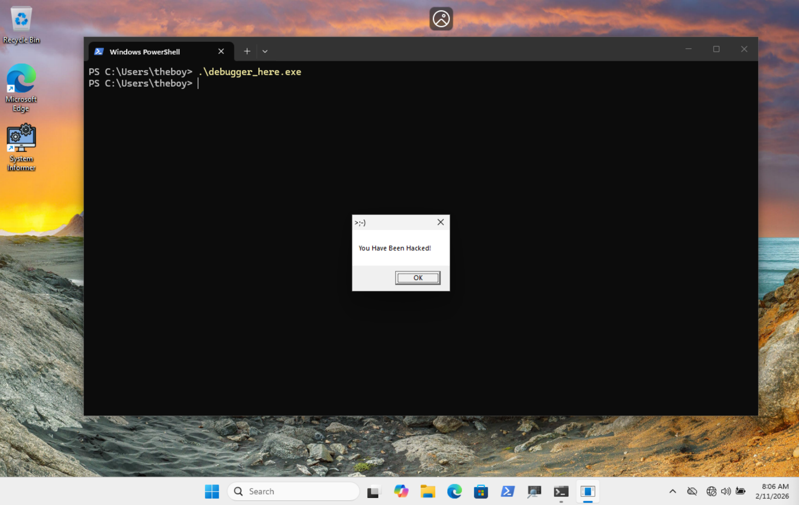
We can see that when it runs, the hack() function is executed and a MessageBox shows the message You Have Been Hacked!. However, if it is launched in a debugger, a different message is shown:
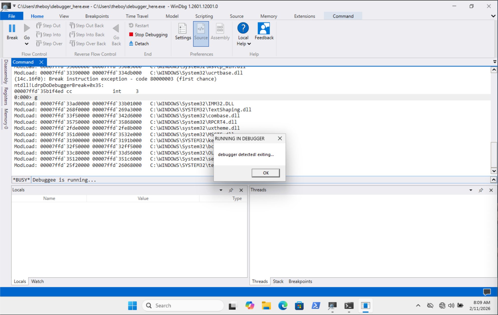
So, depending on the context that the program is running in, it will demonstrate different behaviors. This technique is usesful for malicious program that want to avoid being dynamically analyzed. The same principle applies for the CheckRemoteDebuggerPresent API, which checks if a remote (parallel) process is debugging the program.
Detecting Breakpoints
Software debuggers allow operators to set breakpoints, which are places within a program where the debugger will pause execution, allowing analysts to observe the programs state. When a software breakpoint is set at a particular memory address, the debugger reads the first instruction byte of the target, saves it in an internal lookup table, then replaces it with the value 0xCC, the INT 3 x86 instruction, designed to throw a EXCEPTION_BREAKPOINT. When the debuggee program is executed, it eventually encounters the interrupt instruction. Now, the program doesn't know that it has encountered a breakpoint, it just knows that it hit a software interrupt. The CPU throws the interrupt and the kernel verifies that the program is being debugged. Then, it pauses execution of the target thread and sends a DEBUG_EVENT to the debugger. When execution is resumed, the original bytes are retrieved from the internal lookup table and replaced to the location set by the breakpoint.
A basic way to determine whether a debugger has set breakpoints during execution is to calculate a checksum for the targeted region before the program is compiled. A checksum is a value which helps measure whether any minor changes have been made to a data set. Passing the data through a function produces a relatively unique number. In the event any minor changes are made to the data, the resulting checksum value will be different, indicating some form of data corruption.
By isolating the region within the code where the checksum should be applied, it can be pre-calculated, then hardcoded into the program. The checksum recalculation should occur before any critical sections within the program, where breakpoints should not be allowed.
Here is an example:
// breakpoints.exe
#include <windows.h>
#include <stdio.h>
DWORD CalcFuncChecksum(PUCHAR funcBegin, PUCHAR funcEnd) {
DWORD chksm = 0;
for (; funcBegin < funcEnd; ++funcBegin) {
chksm += *funcBegin;
}
return chksm;
}
VOID Debuggee() {
int x;
long y;
char name[20];
union location{
int list_num;
long longitude;
char str_name[20];
};
}
VOID DebuggeeEnd() {};
DWORD checksum = 0x741;
int main() {
DWORD recalc = CalcFuncChecksum((PUCHAR)Debuggee, (PUCHAR)DebuggeeEnd);
if (checksum != recalc) {
char str[20];
snprintf(str, sizeof(str), "%d", recalc);
MessageBox(NULL, "Debugger!", str, MB_OK);
return -1;
}
MessageBox(NULL, "I Hate Being Debugged!", ">:-(", MB_OK);
return 0;
}
First, we define a function CalcFuncChecksum, which calculates a checksum value for all the data between two memory addresses. In this case, the protected code is within the Debuggee function. DebuggeeEnd is created as an in scope address we can refer to as the end of our Debuggee function. Since the checksum value is not known until the program is run at least once, call CalcFuncChecksum in main, set the return value equal to some DWORD, and print it to stdout using printf. This value should be set equal to checksum. Everytime the program runs, it should start by calculating the checksum for the protected region and comparing it to the hardcoded checksum value. This makes it that much harder for the program to be dynamically analyzed.
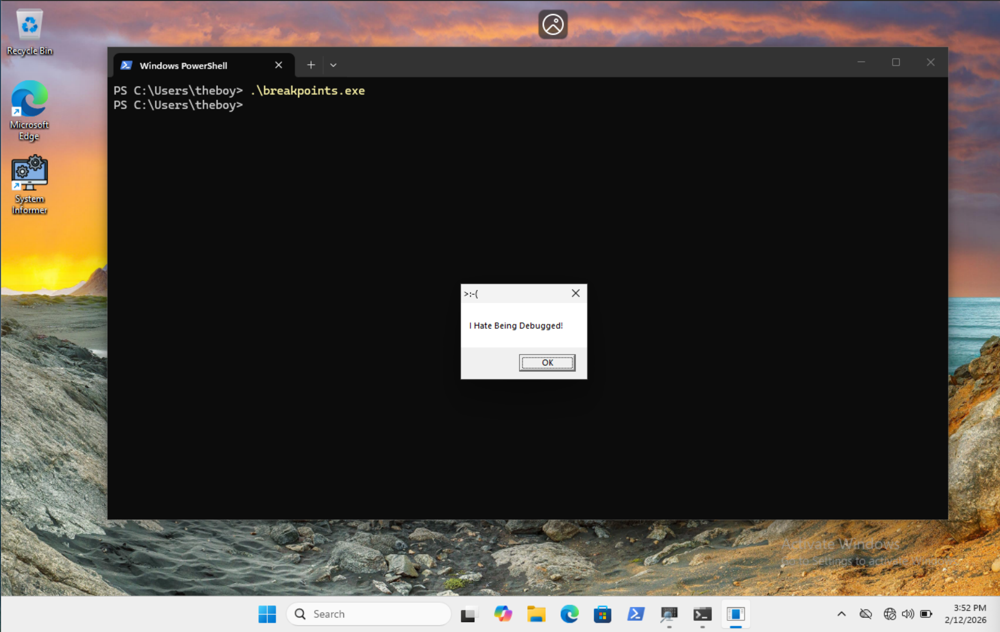
Normal execution of
breakpoints.exe
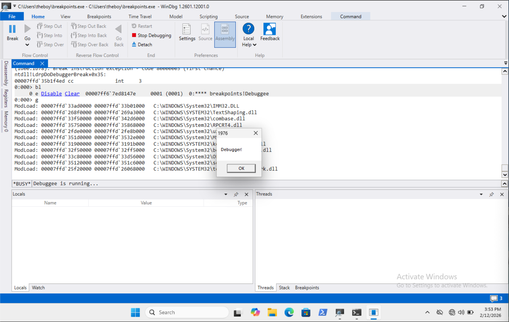
Debugger execution of
breakpoints.exewith breakpoints set
Hiding a Thread from the Debugger
NtSetInformationThread is a low-level Windows Native API, responsible for setting various types of information for a given thread.
NTSTATUS NtSetInformationThread(
[in] HANDLE ThreadHandle,
[in] THREADINFOCLASS ThreadInformationClass,
[in] PVOID ThreadInformation,
[in] ULONG ThreadInformationLength
);
SOURCE: Windows
Ntifs.hDocumentation
Here is a breakdown of the function's parameters:
-
ThreadHandle: A handle to the thread that needs to be modified. It must haveTHREAD_SET_INFORMATIONaccess rights. -
ThreadInformationClass: An enumerable structure, which tells the kernel what needs to be changed about the thread. This includes:ThreadPritority(0x00): Sets the scheduling priority, determining how much CPU time the thread receives relative to other threads.ThreadAffinityMask(0x04): Forces the thread to run only on specific CPU cores.ThreadImpersonationToken(0x05): Used to assign an Access Token to a specific thread, allowing it to act on behalf of another user.
ThreadHideFromDebugger(0x11) is an undocumented value that can be used to force a debugger to stop sending events to the thread (i.e. breakpoints). This may cause crashes if a breakpoint is set within the target thread or if it is the main thread of the debugged process. -
ThreadInformation: A pointer to a buffer that contains the new data that should be set for the thread. Set toNULLforThreadHideFromDebugger. -
ThreadInformationLength: The size, in bytes of the buffer pointed to byThreadInformation.
Since NtSetInformationThread is part of the Native API, we must use GetProcAddress to retrieve it from ntdll.dll:
#include <windows.h>
#include <stdio.h>
typedef NTSTATUS (NTAPI *pNtSetInformationThread)(
HANDLE ThreadHandle,
ULONG ThreadInformationClass,
PVOID ThreadInformation,
ULONG ThreadInformationLength
);
#define ThreadHideFromDebugger 0x11
BOOL HideThread(){
HMODULE hNtDll = GetModuleHandleA("ntdll.dll");
if (hNtDll == NULL) return FALSE;
pNtSetInformationThread NtSetInformationThread = (pNtSetInformationThread)GetProcAddress(hNtDll, "NtSetInformationThread");
if (NtSetInformationThread != NULL){
NTSTATUS status = NtSetInformationThread(GetCurrentThread(), ThreadHideFromDebugger, NULL, 0);
if (status == 0) return TRUE;
else return FALSE;
}
}
int main(){
if (HideThread()){
MessageBox(NULL, "I enjoy playing Hide and Seek", ";)", MB_OK);
int x = 0;
ULONG y = 0;
const char *bfval;
union {
BOOL real;
char name[20];
float height;
} bigfoot;
bigfoot.real = FALSE;
bfval = (bigfoot.real == TRUE) ? "true" : "false";
MessageBox(NULL, bfval, "Is Bigfoot Real?", MB_OK);
} else {
MessageBox(NULL, "I am not hiding", ":(", MB_OK);
}
}
When we run this program normally, it shows two message boxes: 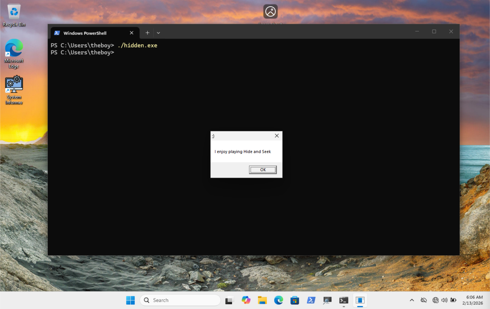
First
MessageBoxafter normal execution
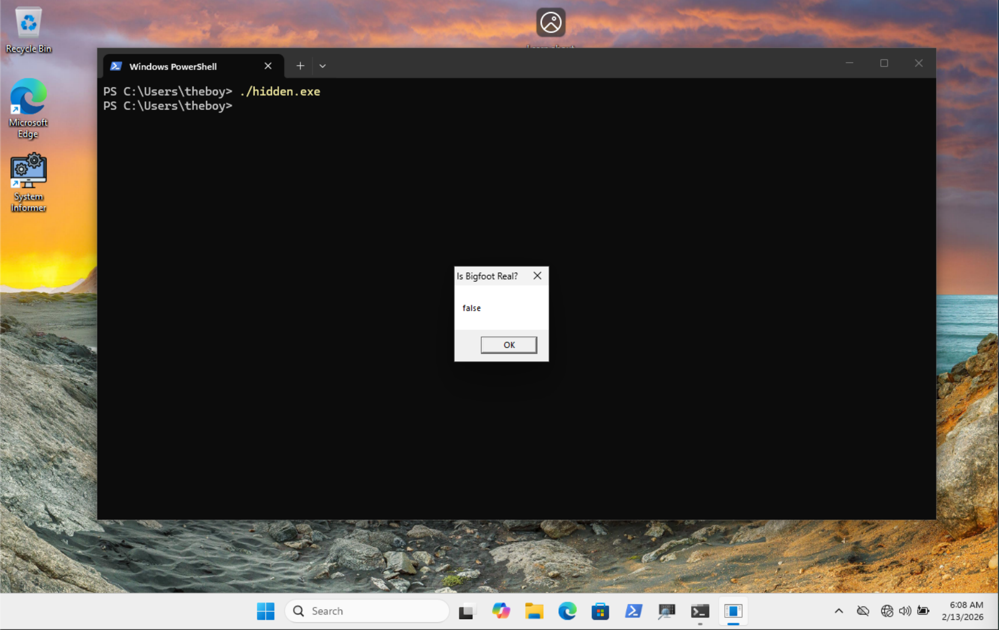
Second
MessageBoxafter normal execution
But, when you open the program in a debugger, while it may appear normal: 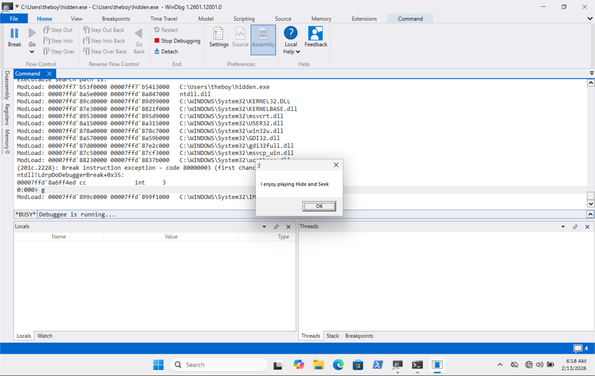
First
MessageBoxafter debugger execution
Second
MessageBoxafter debugger execution
the debugger never recognizes that the debuggee stops running because it cannot send event messages to the thread. This also means that breakpoints cannot be set within the program after the thread is hidden: 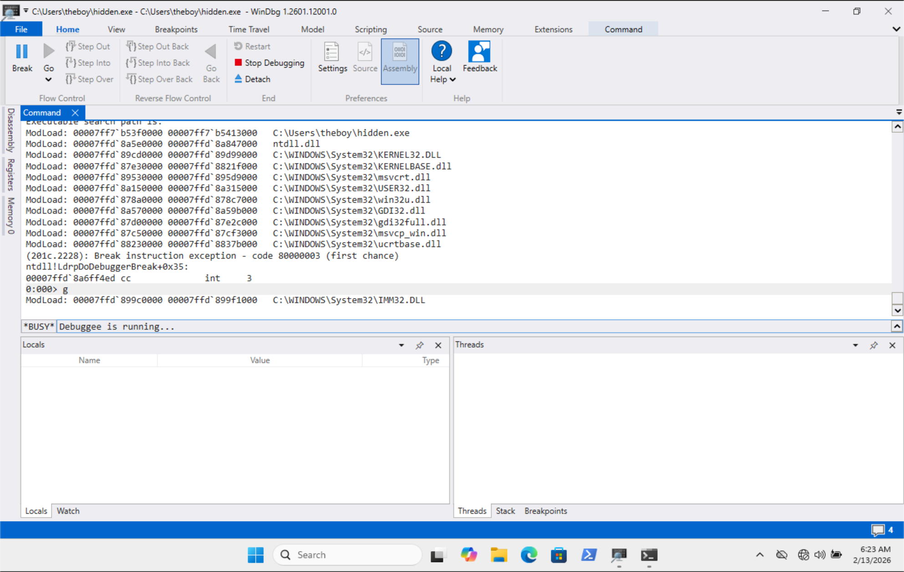
Debugger session still running, after
hidden.exefinishes executing
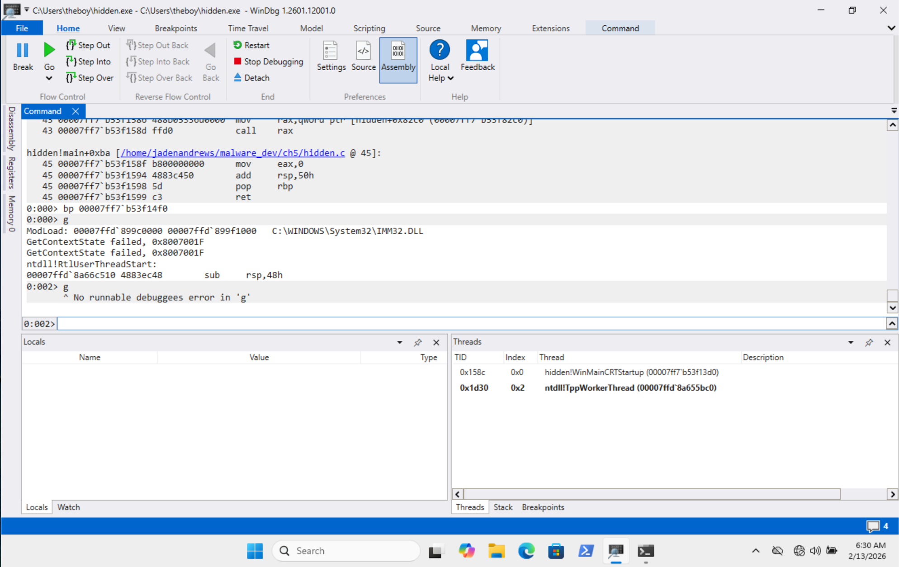
Debugger session closes for hidden thread
Custom Exception Handling
In Windows Funamentals, we talked about Structured Exception Handling. To refresh, it is a mechanism for gracefully handling exceptions when they occur. On 64 bit systems, the compiler generates static, read-only tables that describe the exception handlers and stack unwinding information for each function. This "unwinding" information comes from the CONTEXT structure, which is used to save the state of a thread during context switching. Basically, when an exception occurs, the kernel captures the current CPU state in a CONTEXT structure. Then, it uses the instruction pointer, Rip as an index to the .pdata section of the binary, which contains an array of RUNTIME_FUNCTION structures:
struct _IMAGE_RUNTIME_FUNCTION_ENTRY
{
ULONG BeginAddress;
ULONG EndAddress;
union
{
ULONG UnwindInfoAddress;
ULONG UnwindData;
};
};
SOURCE: Vergilius
Where:
BeginAddress: The Relative Virtual Address (RVA) of the start of a function.EndAddress: The RVA of the end of the function.UnwindData/UnwindInfoAddress: A structure/pointer used to identify the correct index within the.xdatasection of the PE binary.
Rsp is used to virtualize the stack. As the OS moves from the crashed function back to the caller, Rsp is updated in the CONTEXT structure to reflect what the stack should look like in the parent function. The General Purpose Register (Rax, Rbx, Rcx, etc.) are used to restore the thread to some state after the handler has executed. Finally, the Hardware Debug Registers (Dr0-Dr7) can be used to detect whether a hardware exception has occurred. Specifically, if any of Dr0-Dr3 contain non-zero values, it means a hardware breakpoint has been set at the given address.
Unlike software breakpoints, hardware breakpoints do not overwrite any instructions in the code, so they cannot be detected using checksums. We can create a custom exception handler and cause an exception to check the CONTEXT structure and determine whether any hardware breakpoints have been set:
// handler.c
#include <windows.h>
#include <stdio.h>
void Hack(){
MessageBox(NULL, "You have reached my secret function! No hardware breakpoints detected!", ";)", MB_OK);
ExitProcess(0);
}
void Test(){
printf("Hello, world!");
}
long WINAPI HWBP(PEXCEPTION_POINTERS pExceptionInfo){
PCONTEXT ctx pExceptionInfo->ContextRecord;
if(ctx->Dr0 != 0 || ctx->Dr1 != 0 || ctx->Dr2 != 0 || ctx->Dr3 != 0){
ExitProcess(-1); // hardware breakpoints detected
}
ctx->Rip = (DWORD64)Hack;
return EXCEPTION_CONTINUE_EXECUTION;
}
int main(){
AddVectoredExceptionHandler(1, HWBP); // registers the custom exception handler
int* p = NULL;
*p = 1337; // Trigger NULL pointer dereference (CRASH)
Test(); // Test function. Address to set hardware breakpoint to
return 0;
}
If the program executes normally, our hidden Hack function executes as intended. However, if runs within a debugger session that has hardware breakpoints set, it is detected and the session terminates without running Hack.
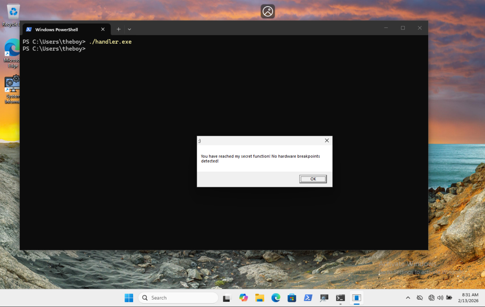
MessageBoxafter normal execution
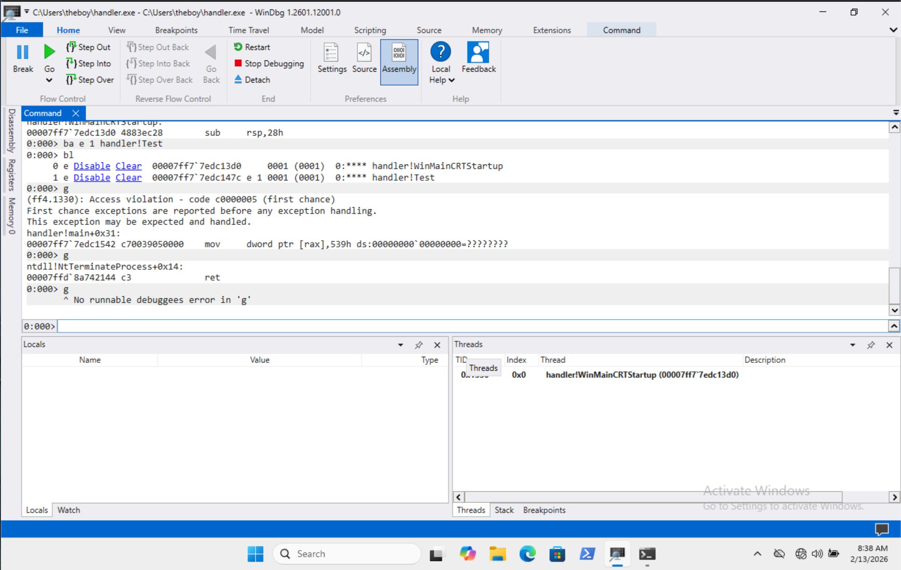
Debugger session terminates when hardware breakpoints are set
There are a number of Anti-Debugging techniques that can be used. The few we went over here are just the tip of the iceberg. The following are great resources for discovering additional techniques, that we did not cover.
Virtual Machine Detection Techniques
Virtual Machines are the standard, isolated environments used for studying malware. Even honeypots use them to trick hackers into reveal the techniques they use to pwn different types of systems. By detecting VMs, malware can avoid being analyzed by crashing, refusing to unload its payload, or taking benign actions. Again, any capable analyst will be able to discover the use of these techniques, but implementing them makes their job that much harder.
Virtual Machines in the Windows Registry
Popular virtual machines services, including VMWare and VirtualBox, use the Windows Registry to store values that are pertinent to their ability to function. This includes features such as hardware abstraction and driver loading, guest integrations, cloud identification.